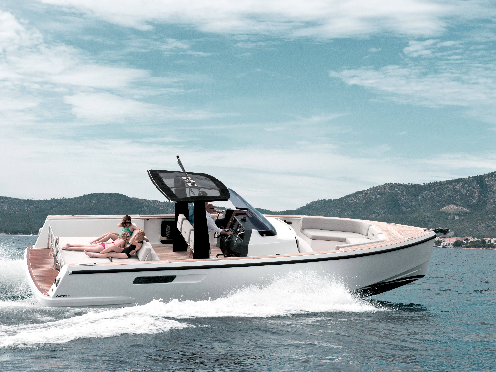

B-Atlas Boat Guide · FJRD-36
Fjord 36 Cruiser Enclosed Cruiser
2008–2012
The Fjord 36 Cruiser is a less-common enclosed cruising variant associated with Fjord’s pre/Open-era 36-foot range. Surviving documentation confirms the model identity and principal dimensions, but machinery, accommodation and production details require individual-hull verification.

- Length
- 35.43 ft
- Beam
- 11.94 ft
- Draft
- 3 ft
- Hull behaviour
- Planing
- Fuel
- Diesel
- Propulsion
- Unknown
- Engine configuration
- Diesel inboard configuration requires hull-specific verification
- Boat family
- Cruiser
- Construction
- Fiberglass
Best for
- Buyers specifically seeking an enclosed Fjord in this size range
- Coastal cruising where weather protection matters
- Owners comfortable researching a less-common model
Trade-offs
- Documentation is much thinner than for the 36 Open
- Individual machinery and interior specifications require verification
- Resale/search recognition is weaker than the better-known Open model
Known concerns
- No model-specific concern has been promoted to B-Atlas’s evidence threshold. This does not mean the model has no age-, condition- or hull-specific risks.
Inspection focus
- Confirm HIN/model designation and production year
- Verify engine count, drive type and tank capacities
- Inspect hull/deck structure and window sealing
- Inspect propulsion, cooling, exhaust and steering systems
- Verify accommodation and air draft
Continue researching
Related boat models
Fjord 36 Open Walkaround Day Cruiser
35.43 ft · Planing
Fjord 40 Cruiser Enclosed Cruiser
39.34 ft · Planing
Fjord 40 Open Walkaround Day Cruiser
39.34 ft · Planing
Cruisers Yachts 3375 Esprit Express Cruiser
35.5 ft · Planing
Carver 3607 Aft Cabin Aft Cabin
35.58 ft · Planing
Cutwater C-30 CB Command Bridge
35.67 ft · Semi-Displacement
About this record
B-Atlas preserves uncertainty: missing information remains unknown rather than being treated as a negative. Specifications and guidance describe the model record; individual boats can differ by year, equipment, refit and condition.